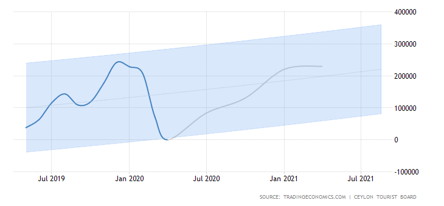

Sri Lanka had no tourists in April of 2020 due to the suspension of all passenger flight & ship arrivals from 18th March 2020 amid the coronavirus crisis. It compares with a 70.8 percent slump to 71,370 in the previous month. Considering January to April period of 2020, visitors' number plunged by 44.1 percent to 507,311 with the biggest drop reported from from China (-71.7 percent to 26,147), France (-52.5 percent to 24,838), the UK (-49.7 percent to 55,455), Germany (-48 percent to 34,507) and India (-31.6 percent to 89,357).
